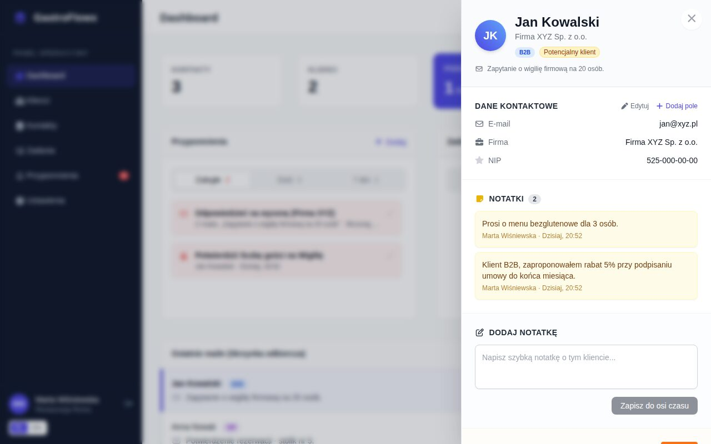
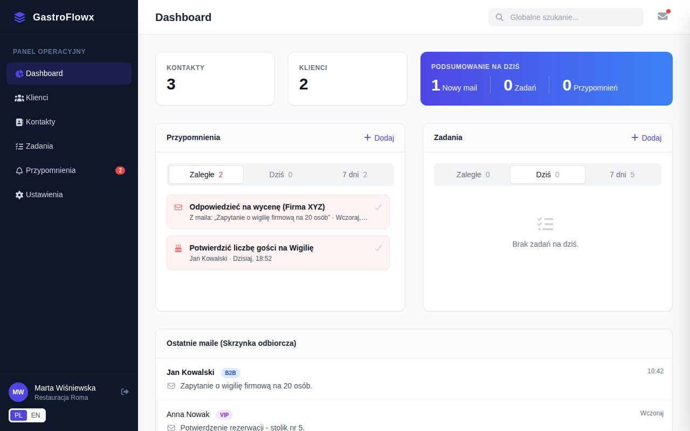
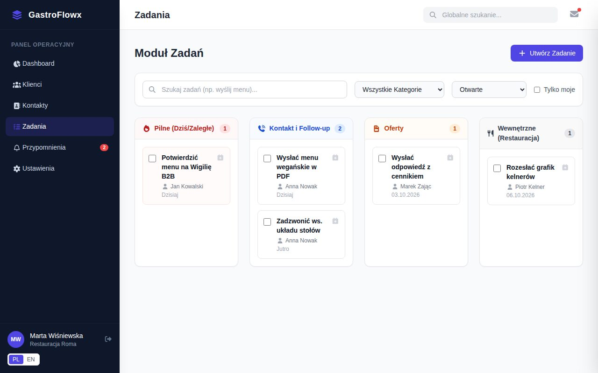

GastroFlowx to rozszerzenie do przeglądarki Chrome dla zespołów restauracji. Otwierasz maila od gościa lub firmy – obok wiadomości widzisz kartę klienta z rezerwacjami, zadaniami, przypomnieniami i notatkami zespołu.
Zainstaluj z Chrome Web Store Panel administratora
Wspólna baza klientów dla całej restauracji, dostępna tam, gdzie i tak pracujecie – w skrzynce e-mail.
Dane kontaktowe, kategoria, status i notatki nadawcy widoczne obok otwartej wiadomości. Nowego nadawcę dodasz do CRM jednym kliknięciem.
Liczba gości, sala, okazja i status rezerwacji przypięte do klienta, z przypomnieniem przed terminem.
Follow-upy, oferty i sprawy wewnętrzne z terminami, przypisywane członkom zespołu. Pulpit dnia pokazuje, co zaległe, a co na dziś.
Po połączeniu konta Google oś czasu klienta uzupełnia się o wcześniejsze maile z tym klientem (temat, data, fragment).
Twoje zadania i przypomnienia trafiają do Twojego Kalendarza Google albo do dowolnego kalendarza przez prywatny link ICS.
Własne kategorie klientów, statusy, kategorie zadań i pola (np. alergie, NIP), licencje i role w zespole.


Połączenie z kontem Google jest dobrowolne i włączasz je w ustawieniach rozszerzenia przyciskiem „Połącz z Google”. Bez niego CRM działa normalnie. Po połączeniu aplikacja prosi o dwa uprawnienia, używane wyłącznie do opisanych funkcji:
gmail.readonly)calendar.events)Sposób, w jaki GastroFlowx wykorzystuje informacje otrzymane z interfejsów API Google i przekazuje je innym aplikacjom, jest zgodny z Zasadami dotyczącymi danych użytkownika w usługach interfejsu API Google, w tym z wymogami dotyczącymi ograniczonego użytkowania (Limited Use). Dane nie są sprzedawane, nie służą do reklam ani do trenowania modeli AI. Dostęp możesz cofnąć w każdej chwili w ustawieniach rozszerzenia lub na myaccount.google.com/permissions. Szczegóły: polityka prywatności.
GastroFlowx is a CRM for restaurant teams that works inside Gmail. When you open an e-mail, a client card with reservations, tasks, reminders and team notes appears next to it.
Connecting a Google account is optional. If you do, GastroFlowx requests gmail.readonly solely to import past correspondence (subject, sender, date and a short snippet) with contacts saved in the CRM into the client timeline, and calendar.events solely to create, update and delete calendar events that mirror your GastroFlowx tasks and reminders. It never sends, deletes or modifies e-mail.
GastroFlowx’s use and transfer to any other app of information received from Google APIs will adhere to the Google API Services User Data Policy, including the Limited Use requirements. See our Privacy Policy.